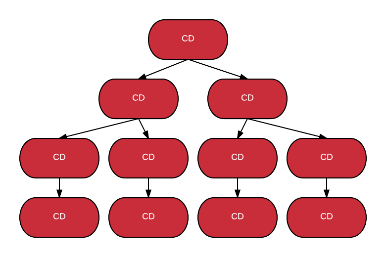

Functional
Reactive
Angular
Created by John Urberg
Systems Architect @Lifetouch
@jurberg / jurberg.github.io
What is functional programming?
When functions, not objects or procedures, are used as the fundamental building blocks of a program.*
First Class Functions
The ability to use functions as data values:
- Stored in variables
- Passed as arguments to functions
- Created within functions
- Returned from functions
// store in a variable
const add = (a, b) => a + b;
// pass as an argument
map((a) => a + 1, [1, 2, 3]);
// return a function
const createAdder = (a) => (b) => add(a, b);
// curry a function
const add = curry((a, b) => a + b);
const add3 = add(3);
// compose functions
const incomplete = filter(where({complete: false}));
const groupByUser = partition(prop('username'));
const activeByUser = compose(groupByUser, incomplete);
const results = activeByUser(tasks);Purity
- Immutable Data
- No Side Effects
Immutability
const cust = Object.freeze({
name: 'John Doe',
balance: 100
});
cust = {name: 'Jane Doe', balance: 100}; // TypeError
cust.name = 'Jane Doe'; // TypeError
const jane = Object.freeze(Object.assign({}, cust, {
name: 'Jane Doe'
}));
const jane = Object.freeze({ ...cust, name: 'Jane' });const john = Immutable.Map({
name: 'John Doe',
balance: 100
});
const jane = john.set('name', 'Jane Doe');Purity
// impure
function updateBalance(amount) {
this.balance = this.balance + amount;
return this.balance;
}// pure
function updateBalance(amount, customer) {
return customer.set('balance',
customer.balance + amount);
}// Is this pure or impure?
function updateBalance(amount, customer) {
console.log('Update balance with ' + amount);
return customer.set('balance',
customer.balance + amount);
};Other Functional Stuff
- Functors and Monads
- Referential Transparency
- Lazy Evaluation
Why would I want to do that?!?
Standard Reasons
- Parallelism
- Ability to reason about your program
- Composability
Performance
Angular is faster with immutable objects
(more on that later)
What is Reactive Programming?
Composing asynchronous and event-based operations using observable collections
"everything is a stream"
- click events
- user inputs
- data from a server
Streams use the same operators that are used on lists
// Array
const res = stocks
.filter(q => q.symbol === 'FB')
.map(q => q.quote);
// Observable
const res = stocks$
.filter(q => q.symbol === 'FB')
.map(q => q.quote);Pull vs Push
| Single values | Multiple values | |
| Pull | Object | Iterables (Array, Map, etc) |
| Push | Promise | Observable |
Observables
- Stream of data over time
- Asynchronous
- Lazy
- Hot vs Cold
Observable Creation
Rx.Observable.create(observer => {
observer.next(42);
observer.complete();
return () => console.log('disposed')
});
Rx.Observable.from([1,2,3,4]);
Rx.Observable.timer(5000, 1000);
Rx.Observable.fromEvent(button, 'click');Subscribing to an Observable
stream$.subscribe(
function(value) {},
function(error) {}, // optional
function() {}); // optional
const model$ = Rx.Observable.timer(1, 1000)
.map(i => 'Seconds elapsed ' + i);
model$.subscribe(text => console.log(text));Hot vs Cold Observables
Cold Observables
Sequences that are passive and start producing notifications when subscribed to
Hot Observables
Sequences that are active and produce notifications regardless of subscriptions
Hot/Cold Demo
Link
const obs$ = Rx.Observable.timer(1, 1000);
//const obs$ = Rx.Observable.timer(1, 1000).share();
obs$.subscribe(i => console.log('1 ==> ' + i));
setTimeout(() =>
obs$.subscribe(i => console.log('2 =====> ' + i)),
3000);Auto Complete Demo
Link
const k$ = Rx.Observable.fromEvent($input, 'keyup')
.map(e => e.target.value)
.filter(text => text.length > 2)
.debounceTime(750)
.distinctUntilChanged();
const searcher$ = k$.switchMap(searchWikipedia);
searcher$.subscribe(data => console.log(data));A Rich API
100s of methods
Link
Rx Marbles
Visualize Rx API Methods
RxMarbles
A Reactive Application
- Start with initial app state
- Create a "state" stream that starts with the initial state
- Create an event stream
- State stream reacts to events and creates new app state
- View observes state stream and updates itself
Simple Reactive App Demo
Demo
// event stream
const event$ = Observable.merge(
Observable.fromEvent($('#inc'), 'click').map(_ => 1),
Observable.fromEvent($('#dec'), 'click').map(_ => -1)
);
// state stream starts with 0 and reacts to events
const state$ = event$
.startWith(0)
.scan((x, y) => x + y);
// view observes and updates itself
state$.subscribe(i => $('#count').html(i));Why this matters in Angular
An Angular App is a tree of components
Each component has a change detector

A change causes top to bottom change detection
Immutable objects allow Angular to skip unchanged components
ChangeDetectionStrategy.OnPush
Limit the change detection to only changes that directly affect bindings in our component
OnPush Example
Demo
*syntaxsuccess.com
Async Pipe
Unwraps a value from an asynchronous primitive
@Component({
template: `{{ model$ | async }}`
})
class MyComponent {
model$ = Rx.Observable.timer(1, 1000)
}Reactive Angular Counter
@Component({
template: `
Clicked {{ state$ | async }} times
`
})
class MainComponent {
inc$ = new Subject()
dec$ = new Subject()
event$ = Observable.merge(this.inc$, this.dec$)
state$ = this.event$
.startWith(0)
.scan((x, y) => x + y)
increment() { this.inc$.next(1); }
decrement() { this.dec$.next(-1); }
}Reactive Immutable Angular Todos
Our Model
interface Todo {
id: number;
text: string;
completed: boolean;
}
interface AppState {
todos: Todo[];
visibilityFilter: string;
}Start with initial state
provide(initState, {
useValue: {
todos: [],
visibilityFilter: 'SHOW_ALL'
}
})Create a "state" stream that starts with the initial state
provide(state, {
useFactory: stateFn,
deps: [new Inject(initState), new Inject(dispatcher)]
})Create an event stream
class AddTodoAction {
constructor(public todoId, public text){}
}
class ToggleTodoAction {
constructor(public id: number){}
}
class SetVisibilityFilter {
constructor(public filter: string){}
}
type Action = AddTodoAction |
ToggleTodoAction |
SetVisibilityFilter;
provide(dispatcher, {
useValue: new Subject<Action>()
})State stream reacts to events and creates new app state
function todos(initState, actions) {
return actions.scan((state, action) => {
if (action instanceof AddTodoAction) {
const newTodo = {
id: action.todoId,
text: action.text,
completed: false
};
return [...state, newTodo];
} else {
return state.map(t => updateTodo(t, action));
}
}, initState);
}function filter(initState, actions) {
return actions.scan((state, action) => {
if (action instanceof SetVisibilityFilter) {
return action.filter;
} else {
return state;
}
}, initState);
}function stateFn(initState, actions) {
const combine = s => ({
todos: s[0],
visibilityFilter: s[1]
});
const appStateObs = todos(initState.todos, actions)
.zip(filter(initState.visibilityFilter, actions))
.map(combine);
const res = new BehaviorSubject(initState);
appStateObs.subscribe(s => res.next(s));
return res;
}View observes state stream and updates itself
@Component({
selector: 'todo-list',
template: `<todo *ngFor="#t of filtered|async"/>`
})
class TodoList {
constructor(
@Inject(dispatcher) private dispatcher,
@Inject(state) private state) {}
get filtered() {
return this.state.map(s =>
getVisibleTodos(s.todos, s.visibilityFilter));
}
emitToggle(id) {
this.dispatcher.next(new ToggleTodoAction(id));
}
}*Source: Victor Savkin
Redux
A functional implementation of Flux
Flux


Single source of truth
The state of your whole application is stored in an object tree within a single store.
State is read-only
The only way to mutate the state is to emit an action, an object describing what happened.
Changes are made with pure functions
To specify how the state tree is transformed by actions, you write pure reducers.
Redux Demo
Link
@ngrx/store
Implements the Redux framework using Observables
const todos = (state = [], {type, payload}) => {
switch(type){
case ADD_TODO:
return [...state, {...payload, id:state.length + 1}];
case COMPLETE_TODO:
return state.map(todo => (todo.id !== payload.id ?
todo : { ...todo, completed: true }));
case DELETE_TODO:
return state.filter(todo => todo.id !== payload.id);
default:
return state;
}
}bootstrap(App, [
provide(Store, {
useValue: createStore(combineReducers({
todos,
visibilityFilter
}))
})
])
.catch(err => console.error(err));
class App {
constructor(private store:Store) {
this.todos = store.select('todos')
.combineLatest(
store.select('visibilityFilter'),
(todos, visibilityFilter) => {
return todos.filter(visibilityFilter)
});
}
addTodo(newTodo){
this.store.dispatch({
type: TodoActions.ADD_TODO,
payload: newTodo
});
}
}@ngrx/store Demo
Link
Tips
- Reducers are pure functions
- Break down state into logical groups with separate reducers
- Actions should be strings
- State should be in "JSON'able" form
- Utilize tools like Immutable
- UI components should be dumb
Summary
To build an immutable reactive Angular application:
- Put your application state in an immutable state tree
- Make your application logic functional
- Use a reactive framework to organize your code
Questions
Thanks
https://rawgit.com/jurberg/rx-angular2-presentation/master/presentation/index.html